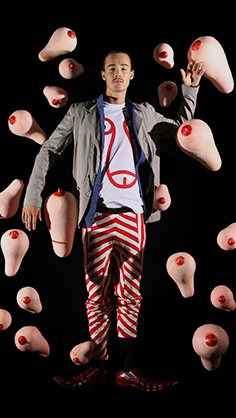
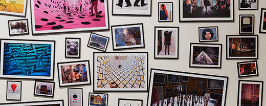

ABOUT THE EXHIBITION
헨릭 빕스코브-패션과 예술, 경계를 허무는 아티스트
대림미술관은 2015년 7월 9일부터 12월 31일까지 패션 디자이너이자 아티스트 헨릭 빕스코브(HENRIK VIBSKOV)의 전시 <헨릭 빕스코브-패션과 예술, 경계를 허무는 아티스트>(HENRIK VIBSKOV - FABRICATE)를 개최합니다. 파리 패션 위크에서 매년 컬렉션을 발표하는 유일한 북유럽 패션 디자이너 헨릭 빕스코브는 끊임없이 형식을 파괴하고 예기치 못한 충격적인 방식으로 그만의 독창적인 패션쇼를 선보이며 새로운 컬렉션이 발표될 때마다 뜨거운 관심과 화제를 불러일으키고 있습니다. 그는 패션뿐만 아니라 사진, 설치, 영상, 퍼포먼스 등 순수예술의 영역에서 꾸준히 작업을 진행해 왔으며, 세계 유수의 미술관에서 다수의 전시를 통해 아티스트로서의 무한한 가능성을 인정받았습니다.
이번 전시는 새롭게 재연출한 런웨이와 데뷔부터 현재까지 발표된 대표 컬렉션, 그리고 다양한 장르를 아우르는 주요작 및 신작을 포함한 총 300여 점의 작품을 한자리에서 소개하고, 특정 장르의 형식적 한계를 깨기 위한 시도와 변화를 두려워하지 않는 헨릭 빕스코브의 작업 방식을 통해 모든 창작의 과정을 놀이처럼 즐기는 적극적인 멀티 크리에이터의 모습을 제시하고자 합니다. 다양한 예술적 영감과 관심사를 하나로 아우르는 도구로써, 패션이 단순히 ‘입기 위한’ 옷이 아닌 ‘자유롭고 열린 표현’을 위한 매체로 확장될 수 있는 가능성을 선보이는 전시 <헨릭 빕스코브-패션과 예술, 경계를 허무는 아티스트>는 위트 넘치는 감각의 놀이터에서 관람객들이 보다 열린 관점으로 새롭게‘ 패션’을 바라보고, 직접 그의 예술 세계를 경험해보는 특별한 기회가 될 것입니다.
ARTIST'S INTERVIEW
헨릭 인터뷰 동영상 재생(전체화면)VIEW POINT
-

POINT01
패션 디자이너로서의
헨릭 빕스코브HENRIK VIBSKOV
AS A FASHION DESIGNER헨릭 빕스코브의 과거와 현재를
The Big Wet Shiny Boobies S/S 2007 Collection ©Henrik Vibskov
대표하는 런웨이와 컬렉션을 통해
패션 디자이너로서의 헨릭
빕스코브를 소개합니다. 2015년 6월
파리 패션 위크에서 발표한 헨릭
빕스코브의 2016년 S/S 런웨이와
컬렉션을 한국에서 동시에 공개하고,
쉽게 경험할 수 없는 패션쇼의 -
백 스테이지를 새롭게 재현합니다. 그리고 2003년부터 현재까지 발표해 온 헨릭
빕스코브의 대표 의상 40여 벌이 파격적인 퍼포먼스로 주목 받았던 'The Big Wet Shiny Boobies S/S 2007 Collection’의 런웨이에 사용되었던 가슴을 모티브로 한
오브제들과 함께 전시됩니다. -

POINT02
아티스트로서의 헨릭 빕스코브
HENRIK VIBSKOV AS AN ARTIST
헨릭 빕스코브의 ‘신체’에 대한 관심, 옷을 만드는 재료와 컬러, 그리고 제작방식에 대한
Henrik Vibskov's Photo Wall, 2004 - 2015 ©Henrik Vibskov
실험과 연구를 반영한 다양한 장르의 작품들 - 사진, 그래픽, 텍스타일, 설치 등 - 을 통해
아티스트로서의 헨릭 빕스코브를 소개합니다. 헨릭 빕스코브의 패션이 완성되는 과정에
영감적인 재료로 사용된 중요작들과 이번 전시를 위해 특별히 제작한 신작들이 함께
공개되며, 헨릭 빕스코브의 과거부터 현재까지의 모든 작업 과정과 결과물을 기록한 200여
점의 사진 작품들도 함께 전시됩니다. -
POINT03
헨릭 빕스코브의 세계
THE UNIVERSE OF
HENRIK VIBSKOV패션과 예술이 결합하여 완성된 헨릭 빕스코브의 감각적인 세계를 직접 경험할 수 있는 런웨이를 새롭게 구현합니다. 특히 후각과
The Mint Institute A/W 2008 Collection ©Henrik Vibskov
미각이라는 요소를 패션쇼에 최초로 적용시키며 패션에서 시도되지 않은 새로운 관객 경험을 선사한 'The Mint Institute A/W 2008
Collection'의 런웨이를 재연출하여, 관람객들에게 패션쇼의 주인공이 되어보는 특별한 경험을 선사합니다.